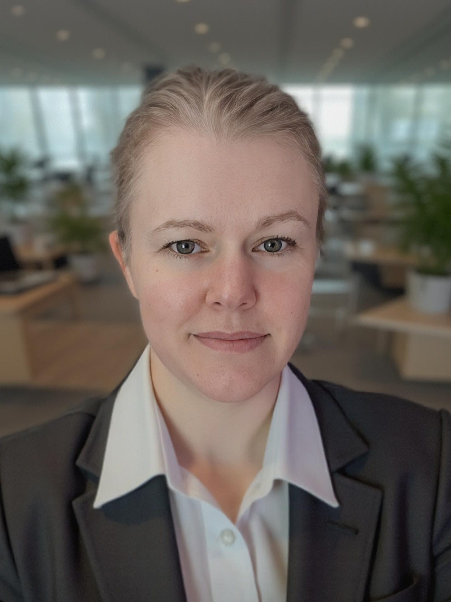

I teach and design courses across the computer science and cyber curriculum, with a focus on programming fundamentals, data structures, algorithms, languages and machines, and senior-level colloquia. My work sits at the intersection of computer science education, cyber operations, and applied machine learning, with an emphasis on preparing future officers to think clearly, build robust systems, and lead in complex technical environments.
24 years of U.S. Air Force service. Prior enlisted Airborne Spanish Cryptologic Linguist with 1,262 flight hours on the EC-130H and RC-135. Commissioned via OTS in 2013; cyberspace operations officer with operational experience in Colombia, Ecuador, Afghanistan, Qatar, and Djibouti.

Conceptual foundations, real-world relevance, and structured support for future officers and technical leaders. Across my time at USAFA I have delivered 16 course offerings spanning seven distinct courses in the computer science and cyber curriculum.
Introduces core programming constructs and problem-solving skills in Python. Emphasizes clear mental models for variables, control flow, functions, and basic data structures through frequent, low-stakes practice.
A second course in programming focusing on C, pointers, and memory management. As Course Director, I oversee course structure, assessments, and multi-section coordination to ensure consistent learning outcomes.
Covers arrays, lists, stacks, queues, trees, hash tables, and related systems concepts. I focus on helping students understand why specific data structures are chosen and how they affect performance and maintainability.
Studies classic algorithm design paradigms and complexity analysis. Emphasizes reasoning about tradeoffs and connecting algorithms to cyber and operationally relevant scenarios.
Explores models of computation and their role in compilers and language design. Highlights how formal models underpin the tools and languages cadets will encounter in modern software and cyber environments. *Partial offering during the government shutdown.
Senior-level colloquium series designed to broaden cadets' understanding of computing and cyber careers, ethics, and professional life. See the Colloquium & ACCR section for details.
Senior capstone supporting applied project work that integrates the breadth of the CS and cyber curriculum and prepares cadets to translate technical skills into operational impact.
The Colloquium series and the Academy Center for Cyberspace Research connect cadets and faculty with the operational, industry, and academic communities they will lead and serve alongside.
The Computer Science and Cyber Science Colloquium brings in guest speakers from across the Department of Defense, industry, government, and academia to broaden cadets' perspectives on technical careers, leadership, and professional life.
As the faculty lead, I curate speakers and topics that:
As Director of ACCR, I coordinate cyberspace-related research across the Academy, connecting cadets and faculty with external partners and opportunities.
ACCR supports work in:
My role includes managing research collaborations and CRADAs, supporting cadet and faculty projects, facilitating summer research placements, and integrating research back into the classroom and colloquium.
My research interests lie at the intersection of machine learning, aerospace systems, cyber operations, and computer science education. I am particularly interested in how data and AI techniques can support operational decision making, and how we can design learning experiences that produce adaptive, resilient technical leaders.
I mentor cadet research projects that combine programming, data analysis, and cyber or aerospace applications. When possible, I encourage students to present their work at internal symposia or external venues, and to think about how research can inform their future roles as officers.
I am also interested in collaborations related to cyberspace operations, AI/ML in operational contexts, and computing education research.
Below are my current CVs. These include a full list of courses taught, academic and military experience, publications, and professional activities.
The best way to reach me for academic collaborations, speaking opportunities, or questions about my teaching and research is by email. I am especially interested in work related to cyberspace operations and education, applied ML in aerospace or cyber contexts, and computer science education research.